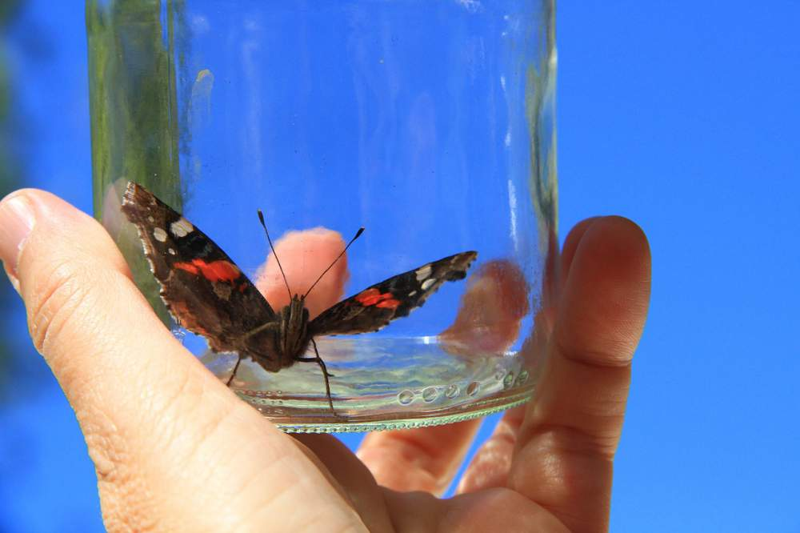

Mindfulness opens the capacity within us for getting unstuck from these unhelpful little patterns. With no awareness of this, we continue to be trapped.
The first step towards change is awareness. The second step is acceptance. - Nathaniel Branden

As the quote above suggests, a change of any kind is more than one simple step. Mindfulness is not simply about being aware. It's what we do with what we're aware of that makes a difference. Let's continue by moving on towards how we can do this by exploring inner resistance.
The full version of this app has the complete set of eight guided mindfulness tracks, as well as extra exercises and tools, summaries of the chapters, and a live recordings section of full-length guided meditations. If you are interested, you can purchase the complete version of the app here.